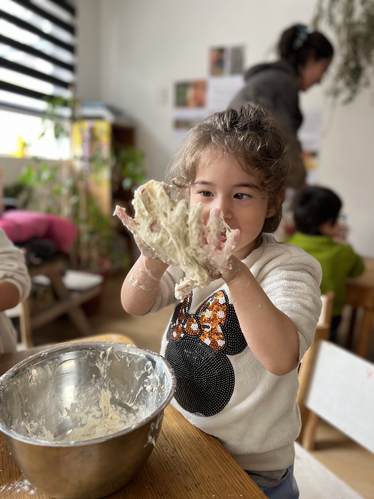

Cómo planificamos, qué vas a notar en tu hijo o hija y lo que te llevas escrito a fin de año.

No trabajamos para evitar emociones difíciles, sino para atravesarlas. Respetamos tiempos reales, modelamos calma, sostenemos emociones sin apurarlas. La frustración es parte del crecimiento.
Los niños aprenden desde la experiencia directa de ciclos reales. Los procesos importan más que el resultado inmediato. La espera hace visible el crecimiento.
Trabajamos la autoestima desde la construcción de la capacidad real. Permitimos el error, sostenemos la frustración, celebramos proceso más que resultado. Mejora personal, no comparación externa.
A principios de año, el equipo de cada sala se reúne para hacer la progettazione: definir qué proyectos e investigaciones guiarán el año con ese grupo de niños y niñas. No es un programa cerrado: es una dirección con espacio para que ellos/as la transformen.
Mes a mes, eso se convierte en experiencias dentro de nuestros espacios, pensados para ir profundizando e investigando en esos proyectos, para que puedan ser explorados desde los 100 lenguajes del niño/a. Y ahí empieza el ciclo.
Loris Malaguzzi decía que el niño tiene cien lenguajes: cien maneras de pensar, de jugar y de hablar. Por eso, una misma pregunta no se investiga de una sola forma: se investiga desde muchos lenguajes a la vez, con el dibujo, la pintura, la luz, la construcción, el cuerpo, la música y la palabra.
Preparamos el espacio con algo que despierte la pregunta. No hay consigna: hay una invitación.
Estamos presentes, no adelante. Miramos qué hace, qué pregunta y dónde se queda.
La curiosidad se convierte en exploración compartida. No damos la respuesta: buscamos juntos.
Fotos, videos y notas. Lo que pasó queda, y se puede volver a mirar con calma.
El equipo analiza lo observado: ¿qué emergió? ¿qué les interesa? ¿qué sigue?
Con eso se planifica el mes siguiente. No sale de un programa cerrado: sale de ellos/as.
Los materiales del día a día no se eligen de un catálogo: se eligen mirando a estos niños y niñas. Lo que el equipo va comprando y montando responde a lo que vemos que les está interesando, y los espacios se van mejorando con eso.
Hoy, cada sala (Stella, Luna y Sole) tiene dos sesiones de inglés por semana: una en la mañana y una en la tarde. No es un taller aparte ni un costo extra: pasa dentro de la jornada.
Desde 2027, el inglés pasa a ser parte del día en las tres aulas. En Stella, dos adultos hablan en español y uno en inglés durante toda la jornada; en Luna, uno en español y otro en inglés. Y en Sole, la educadora del nivel organiza la jornada para que unas dos horas al día se vivan en inglés.
Nada de clases sentados ni de fichas para completar. Hay juego, materiales y provocaciones: algo puesto en el espacio para despertar curiosidad e interés por aprender, sin decirle al niño o niña que es hora de «una lección». Ellos llegan, lo descubren, y la exploración parte de ahí.
Nada de esto aparece en un folleto. Pero es lo que tu hijo o hija vive todos los días.
Y por encima de todo: se respeta su proceso y su tiempo. Siempre.
Cambios que las familias observan en los primeros meses.
Cuando lo despiertas en la mañana, se viste feliz para llegar a Bianca Stella. Puede que al llegar le dé pena despedirse de ti, y es parte del proceso. Pero cuando lo vas a buscar lo ves feliz, y la mayoría de los días te dice que no se quiere ir.
Se viste solo y se frustra menos. Se queda sentado a comer, se da tiempo para intentar las cosas y entiende que cada momento del día tiene el suyo.
Desde 2027 lo escucha todos los días, en su sala y con su profe. Y un día dice algo en inglés o te canta una canción, y te das cuenta de que lo aprendió sin que nadie se lo enseñara como materia. Solo jugando.
Empieza a tener una relación especial con la naturaleza: hace rituales de saludo y despedida con las gallinas. Quiere ir el fin de semana y tienes que explicarle que Bianca Stella está cerrado.
Deja de pedir ayuda para todo. No es que no se equivoque: es que equivocarse dejó de ser un drama.
Empieza a cuestionarlo todo. No se queda con lo que le dices: quiere entender por qué y lo averigua. Y si algo no le resulta, lo vuelve a intentar con otra idea.
No es un informe con notas ni resultados. Es una documentación del proceso que vivió durante el año, con fotos y texto a partir de lo que investigó, disfrutó, aprendió y lo que lo desafió, con los proyectos y avances que hizo solo y junto a sus pares.
Nuestros egresados hoy están en colegios de la zona, del sector oriente de Santiago y hasta de Puerto Varas, desde colegios tradicionales hasta proyectos alternativos. Llegan con lo que les sirve en cualquiera de ellos: confianza, autonomía y ganas de aprender.
Ven con tu hijo o hija a recorrer el espacio y conversar con nosotros.
Agenda tu visita → o llámanos al +56 9 5366 7384